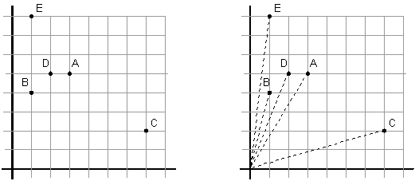

If debugging is the process of removing bugs, then programming must be the process of putting them in. -- Edsgar Dijkstra
Declaration Basics
Given these declaration:What is the type of foo? (These are trivial.)int foo; /* an integer */ int *foo; /* a pointer to integer */ int foo[5]; /* an array of 5 integers */
How about this? (Maybe not so trivial?)
The foo above is a complex or compound declaration because it consists of more than one type specifier. (Pointer and array) You may need to refer to the precedence chart when deciphering it.int *foo[5]; /* how about this? */
Given this declaration:
What is the type of foo?char *(*foo(char *, int))[5];
Operator Meaning English phrase
------------------------------------------------------------------------
* Pointer pointer to
[] Array array of N
() Function function taking X and returning Y
Basic combinations:int *p; /* pointer to an int */ double p[5]; /* array of 5 doubles */ int p(float); /* function taking a float and returning an int */
Illegal declarations:Operators Meaning with variable -------------------------------------------------------- *() function returning a pointer *foo() (*)() pointer to a function (*foo)() *[] array of pointers *foo[] (*)[] pointer to an array (*foo)[] [][] array of array foo[][] ** pointer to a pointer **foo
Proper declarationsOperators Meaning ---------------------------------------------------- ()[] function returning an array (ILLEGAL) ()() function returning a function (ILLEGAL) []() an array of functions (ILLEGAL)
Notes:Operators Meaning with variable ------------------------------------------------------------------------ (*())[] function returning a pointer to an array (*foo())[] (*())() function returning a pointer to a function (*foo())() (*[])() an array of pointers to functions (*foo[])()
The Right-Left (or Inside-Out) Rule
What is the English equivalent of each declaration? In other words, what is the type of f1, f2, etc?
- int f1;
- int *f2;
- int f3[3];
- int *f4[3];
- int (*f5)[3];
- int *(*f6)[3];
- int f7[3][4];
- int *f8[3][4];
- int (*f9)[3][4];
- int *(*f10)[3][4];
- int (*f11[3])[4];
- int *(*f12[3])[4];
Functions/Pointers
Functions/Pointers/Arrays- int f21(void);
- void f22(int, float);
- void f23(int age, float weight);
- int *f24(void);
- int (*f25)(void);
- int **f26(void);
- int *(*f27)(void);
- double *(*f28)(int, float *);
- int **(**f29)(void);
- int f31()[5];
- int *f31a[5]();
- int (*f31b[5])();
- int f32()();
- int *f32a()();
- int (*f32b())();
- int f33[5]();
- int *f33a[5]();
- int (*f33b[5])();
Answers to the above C declarations.struct BITMAP *(*(*f41)[5])(const char *, int); unsigned int *(*f42(struct BITMAP **))[5];
English to C Declarations
Bonus:
Exercise: Declare a function that takes a single argument (which is a pointer to a function taking no arguments and returning void) and returns a similar function pointer (that is: it returns another pointer to a function taking no arguments and returning void). This is a common function in C++.
Function Pointers
Functions are treated slightly differently by the compiler:
int f(void)
{
return 255;
}
int main(void)
{
printf("%p, %p, %p, %X\n", f, *f, &f, f());
return 0;
}
0x400e60, 0x400e60, 0x400e60, FF
int f(void)
{
return 255;
}
int main(void)
{
int i;
int (*pf)(void); /* a pointer to a function taking void and returning int */
pf = f; /* Ok, no function call */
pf = &f; /* Ok, but unnecessary */
pf = *f; /* Ok, but unnecessary */
pf = f(); /* Error: 'int (*)(void)' differs in levels of indirection from 'int' */
i = f(); /* Ok */
f = pf; /* Error: '=' : left operand must be l-value */
printf("%p, %p, %p, %X\n", f, *f, &f, f());
printf("%p, %p, %p, %X\n", pf, *pf, &pf, pf());
return 0;
}
Calling the function f can be accomplished in different ways:0x400e60, 0x400e60, 0x400e60, FF 0x400e60, 0x400e60, 0x7fff1cda12b8, FF
int f(void)
{
return 255;
}
int main(void)
{
int value;
int (*pf)(void) = f; /* Initialize pf with address of f */
/* All statements are equivalent */
value = f(); /* call function "normally" */
value = pf(); /* call function through pointer to function */
value = (*pf)(); /* dereference pointer to function */
return 0;
}
/* a function that takes nothing and returns an int */
int f(void)
{
return 255;
}
/* a function that takes nothing and returns an int
int g(void)
{
return 0;
}
/* a function that takes nothing and returns a double */
double h(void)
{
return 0.5;
}
int main(void)
{
int value;
int (*pf)(void); /* function pointer */
double (*ph)(void); /* function pointer */
pf = f; /* Ok, pf and f are same type */
pf = g; /* Ok, pf and g are same type */
pf = h; /* Error: incompatible types */
ph = h; /* Ok, ph and h are same type */
pf = (int (*)(void)) h; /* Only if you know what you're doing! (Unlikely in this case.) */
value = pf(); /* Value is undefined garbage, not 0. Bonus if you know why. */
return 0;
}
Using Function Pointers
Given these math functions:and this declaration:/* From math.h */ double sin(double); double cos(double); double tan(double);
double (*pMathFns[])(double) = {sin, cos, tan};
It is easy to invoke the functions pointed to: (precedence chart)
void TestFnArray1(void)
{
int i;
for (i = 0; i < 3; i++)
{
double x = pMathFns[i](2.0); /* Evaluating left to right makes it easy */
printf("%f ", x);
}
printf("\n");
}
Output:
0.909297 -0.416147 -2.185040
What is the type of pf below? What is sizeof(pf)? What is sizeof(*pf)? What is sizeof(**pf)? (As always, drawing a diagram may help you answer these questions.)
void TestFnArray2(void)
{
double (*(*pf)[3])(double) = &pMathFns; /* Why &? Draw a diagram! */
int i;
for (i = 0; i < 3; i++)
{
double x = (*pf)[i](2.0); /* Easy to evaluate */
printf("%f ", x);
}
printf("\n");
}
Note the initialization of pf. If we leave off the &, we get warnings:
GNU gcc:
warning: initialization from incompatible pointer type [-Wincompatible-pointer-types]
double (*(*pf)[3])(double) = pMathFns;
^~~~~~~~
warning: incompatible pointer types initializing 'double (*(*)[3])(double)' with
an expression of type 'double (*[3])(double)'; take the address with &
[-Wincompatible-pointer-types]
double (*(*pf)[3])(double) = pMathFns;
^ ~~~~~~~~
&
Or using pointer notation:double (*(*pf)[3])(double) = &pMathFns; 1. double x = (*pf)[i](2.0); /* Ok (as above) */ 2. double x = *pf[i](2.0); /* ??? */ 3. double x = (*pf[i])(2.0); /* ??? */
void TestFnArray3(void)
{
double (**ppf)(double) = pMathFns;
int i;
for (i = 0; i < 3; i++)
{
double x = (*ppf++)(2.0); /* (**ppf++)(2.0) will also work */
printf("%f ", x);
}
printf("\n");
}
Function Pointers as Callbacks
qsort is a function that can sort an array of any data. Even types that haven't been invented yet!
void qsort(void *base,
size_t num,
size_t width,
int (*compare)(const void *elem1, const void *elem2)
);
The qsort function implements a quick-sort algorithm to sort an array of num elements, each of width bytes. The argument base is a pointer to the base of the array to be sorted. qsort overwrites this array with the sorted elements. The argument compare is a pointer to a user-supplied routine that compares two array elements and returns a value specifying their relationship. qsort calls the compare routine one or more times during the sort, passing pointers to two array elements on each call:
The routine must compare the elements, then return one of the following values:compare((void *) elem1, (void *) elem2);
Return Value Description
-------------------------------------------
< 0 elem1 less than elem2
0 elem1 equivalent to elem2
> 0 elem1 greater than elem2
int compare_int(const void *arg1, const void *arg2)
{
int left = *(int *)arg1; /* Can't dereference a void * */
int right = *(int *)arg2; /* Can't dereference a void * */
if (left < right)
return -1;
else if (left > right)
return 1;
else
return 0;
}
int compare_int1(const void *arg1, const void *arg2)
{
return *(int *)arg1 - *(int *)arg2;
}
void qsort(void *base,
size_t num,
size_t width,
int (*compare)(const void *elem1, const void *elem2)
);
void PrintInts(int array[], int size)
{
int i;
for (i = 0; i < size; i++)
printf("%i ", array[i]);
printf("\n");
}
void TestInts(void)
{
int array[] = {5, 12, 8, 4, 23, 13, 15, 2, 13, 20};
PrintInts(array, 10); /* print the array */
qsort(array, 10, sizeof(int), compare_int1); /* sort the array */
PrintInts(array, 10); /* print the sorted array */
}
Output:
5 12 8 4 23 13 15 2 13 20
2 4 5 8 12 13 13 15 20 23
By creating another comparison function, we can sort in descending order:
int compare_int2(const void *arg1, const void *arg2)
{
return *(int *)arg2 - *(int *)arg1;
}
Now we can do:
void TestInts(void)
{
int array[] = {5, 12, 8, 4, 23, 13, 15, 2, 13, 20};
PrintInts(array, 10); /* print original array */
qsort(array, 10, sizeof(int), compare_int1); /* sort in ascending order */
PrintInts(array, 10); /* print sorted array (ascending) */
qsort(array, 10, sizeof(int), compare_int2); /* sort in descending order */
PrintInts(array, 10); /* print sorted array (descending) */
}
Output:
5 12 8 4 23 13 15 2 13 20
2 4 5 8 12 13 13 15 20 23
23 20 15 13 13 12 8 5 4 2
Given a POINT structure we can code comparison functions. What does it mean for one structure to be greater or less than another?
struct POINT
{
int x;
int y;
};
int compare_ptsx(const void *arg1, const void *arg2)
{
return ((struct POINT *)arg1)->x - ((struct POINT *)arg2)->x;
}
int compare_ptsy(const void *arg1, const void *arg2)
{
return ((struct POINT *)arg1)->y - ((struct POINT *)arg2)->y;
}
void PrintPts(const struct POINT pts[], int size)
{
int i;
for (i = 0; i < size; i++)
printf("(%i,%i) ", pts[i].x, pts[i].y);
printf("\n");
}
void TestStructs1(void)
{
/* Array of 5 POINT structs */
struct POINT pts[] = { {3, 5}, {1, 4}, {7, 2}, {2, 5}, {1, 8} };
/* These values are calculated at compile time */
int count = sizeof(pts) / sizeof(pts[0]);
int size = sizeof(pts[0]);
PrintPts(pts, count); /* print the points */
qsort(pts, count, size, compare_ptsx); /* sort the points (on x) */
PrintPts(pts, count); /* print the sorted points */
qsort(pts, count, size, compare_ptsy); /* sort the points (on y) */
PrintPts(pts, count); /* print the sorted points */
}
Output:
(3,5) (1,4) (7,2) (2,5) (1,8)
(1,4) (1,8) (2,5) (3,5) (7,2)
(7,2) (1,4) (3,5) (2,5) (1,8)
We can do something more "exotic" with the POINTS like sorting by the distance from the origin. Here's one way of doing that:
int compare_ptsd(const void *arg1, const void *arg2)
{
struct POINT *pt1 = (struct POINT *)arg1; /* first point */
struct POINT *pt2 = (struct POINT *)arg2; /* second point */
/* calculate distances from origin: d = sqrt(x2 + y2) */
double d1 = sqrt( (pt1->x * pt1->x) + (pt1->y * pt1->y) );
double d2 = sqrt( (pt2->x * pt2->x) + (pt2->y * pt2->y) );
double diff = d1 - d2;
/* return -1, 0, 1 depending on the difference */
if (diff > 0)
return 1;
else if (diff < 0)
return -1;
else
return 0;
}
void TestStructs1(void)
{
/* Array of 5 POINT structs: [A,B,C,D,E] */
struct POINT pts[] = { {3, 5}, {1, 4}, {7, 2}, {2, 5}, {1, 8} };
/* These values are calculated at compile time */
int count = sizeof(pts) / sizeof(pts[0]);
int size = sizeof(pts[0]);
PrintPts(pts, count); /* print the points */
qsort(pts, count, size, compare_ptsd); /* sort the points (by distance from 0,0) */
PrintPts(pts, count); /* print the sorted points */
}
Output:
(3,5) (1,4) (7,2) (2,5) (1,8) [A,B,C,D,E]
(1,4) (2,5) (3,5) (7,2) (1,8) [B,D,A,C,E]

Distances from origin: A(5.83), B(4.12), C(7.28), D(5.38), E(8.06)
Jump Tables
A jump table is simply a table (array) of function pointers. Instead of searching through the list of functions using an if-then-else paradigm, we just index into the table.Assuming we have a function for each operation on a calculator:
double add(double operand1, double operand2)
{
return operand1 + operand2;
}
double subtract(double operand1, double operand2)
{
return operand1 - operand2;
}
double multiply(double operand1, double operand2)
{
return operand1 * operand2;
}
double divide(double operand1, double operand2)
{
return operand1 / operand2;
}
enum OPERATION {ADD, SUB, MUL, DIV};
void DoMath1(double operand1, double operand2, enum OPERATION op)
{
double result;
switch (op)
{
case ADD:
result = add(operand1, operand2);
break;
case SUB:
result = subtract(operand1, operand2);
break;
case MUL:
result = multiply(operand1, operand2);
break;
case DIV:
result = divide(operand1, operand2);
break;
/* possibly other cases ... */
}
printf("%f\n", result);
}
int main(void)
{
DoMath1(3, 5, ADD);
DoMath1(3.14, 2, MUL);
DoMath1(8.4, 8.4, SUB);
return 0;
}
Output:
8.000000
6.280000
0.000000
/* create a "jump table" of calculator functions */
double (*operation[])(double, double) = {add, subtract, multiply, divide};
void DoMath2(double operand1, double operand2, enum OPERATION op)
{
/* replace the entire switch statement with this one line: */
double result = operation[op](operand1, operand2);
printf("%f\n", result);
}
Extending the operations to include a power function:
/* Implement the new functionality */
double power(double operand1, double operand2)
{
return pow(operand1, operand2);
}
/* Update the table */
enum OPERATION {ADD, SUB, MUL, DIV, POW};
double (*operation[])(double, double) = {add, subtract, multiply, divide, power};
Output:DoMath2(3, 5, ADD); DoMath2(3.14, 2, MUL); DoMath2(8.4, 8.4, SUB); DoMath2(5, 3, POW); /* new function */
8.000000 6.280000 0.000000 125.000000